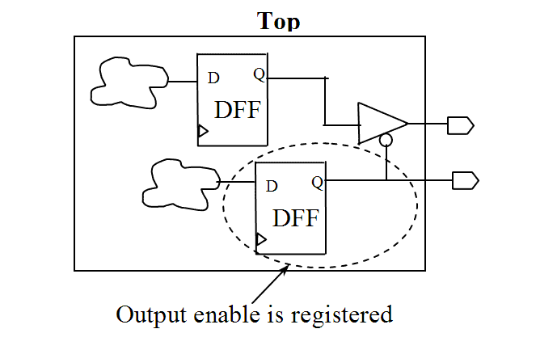

| Description | This rule fires when Leda detects enable signals that are not registered before they are connected to a primary output. Registering the enable signals for primary outputs before they are connected to an output can synchronize the output ports in your design. |
| Policy | DESIGN |
| Ruleset | STRUCTURE |
| Language | VHDL/Verilog |
| Type | Hardware |
| Severity | Error |
Here are examples of valid and invalid Verilog code, followed by a circuit diagram that illustrates the correct approach:
// Invalid example
module ntl_str04_top ;
...
output Enable, Dout;
...
assign Enable = ~Ctrl;
// NTL_STR04 fires -- output enable should be registered
assign Dout = Enable ? Din : 1'bz;
endmodule
// Valid example
module ntl_str04_top ;
...
output Enable, Dout;
...
always @(posedge Clock)
Enable <= ~Ctrl;
// OK -- output enable is registered
assign Dout = Enable ? Din : 1'bz;
endmodule
